地政学
ハンブルクは北海へ通じるエルベ川の港を持ち、ドイツ北部とバルト海、北大西洋、内陸欧州を結ぶ。連邦首都ではないが自由ハンザ都市として自治の記憶を保ち、港湾、海運、通商外交を通じて欧州物流を動かす実務拠点だ。

🇩🇪 ドイツ / ヨーロッパ / World City Atlas
エルベ川に開く北ドイツの自由ハンザ都市。港湾物流、航空機産業、メディア、音楽、移民、水辺の住宅、気候リスクが重なる、海へ向いた内陸港の大都市です。
都市の骨格
ハンブルクは海沿いではなく、エルベ川をさかのぼった内陸にありながら、北海と世界貿易へ開いた都市である。港湾、運河、湖、鉄道、空港、住宅地が水の地形を介して結びつく。
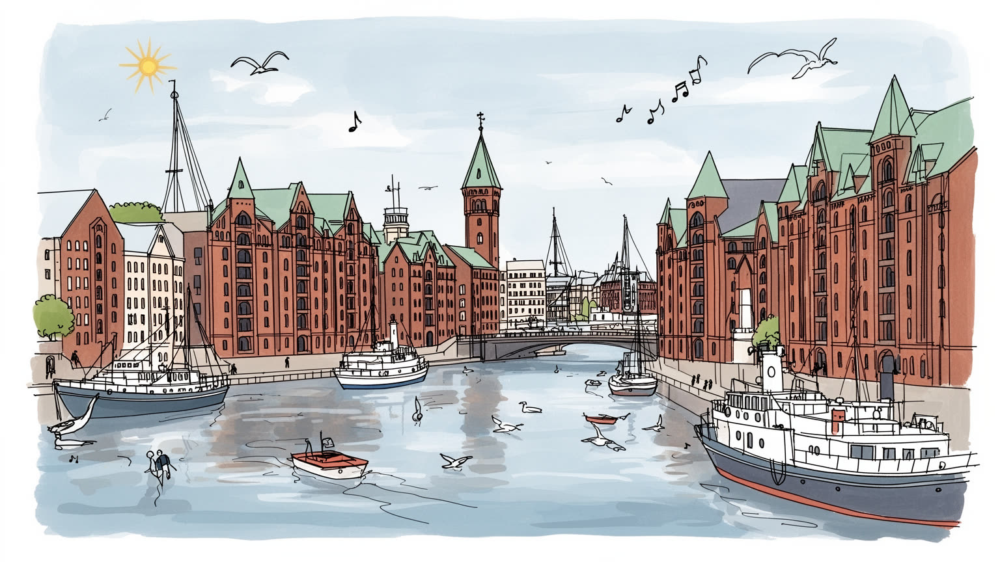
ハンブルクは北海へ通じるエルベ川の港を持ち、ドイツ北部とバルト海、北大西洋、内陸欧州を結ぶ。連邦首都ではないが自由ハンザ都市として自治の記憶を保ち、港湾、海運、通商外交を通じて欧州物流を動かす実務拠点だ。
港湾、コンテナ、造船、航空機、メディア、保険、商社、観光が雇用を厚くする。倉庫、荷役、鉄道、清掃、飲食、介護、配送の現場労働も都市を支え、高所得の専門職と夜勤の港湾労働が同じ都市圏で交差する街だ。
プロテスタントの教会塔、ユダヤ人の記憶、モスク、移民の礼拝、港町の酒場、新聞、劇場、クラブ音楽が重なる。ビートルズの初期演奏、エルプフィルハーモニー、地区祭りは、商業都市の硬さを文化の熱で和らげる。
観光客は倉庫街、港湾、湖、魚市場、レーパーバーンを巡るが、住民には家賃、通勤、保育、洪水対策、騒音、移民支援が切実である。水辺の魅力は高級住宅にもなり、日常の住みやすさとの調整が問われる港街です。
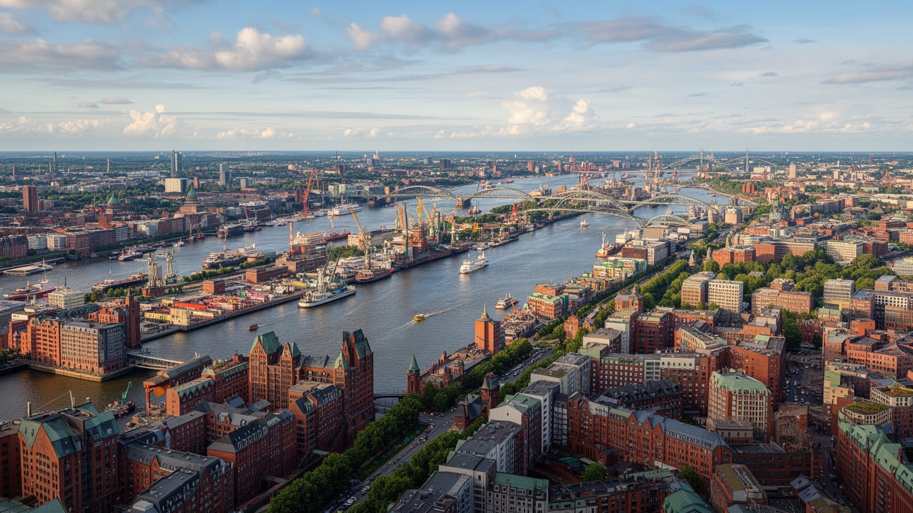
ハンブルクを読む入口は、北海ではなくエルベ川である。都市は海岸線から離れた内陸にありながら、大型船が遡上できる河口港として発展し、川の島、運河、湖、堤防、橋を都市の骨格にしてきた。アルスター湖は中心部に開放感を与え、エルベ川沿いの埠頭や倉庫街は世界貿易の時間を街路へ引き込む。水の多さは景観を豊かにするが、移動、土地利用、防災、住宅価格を複雑にする条件でもある。港湾島や工業地帯は観光客の散歩道から見えにくいが、そこに線路、道路、倉庫、クレーン、税関、労働者の動線が集まる。市街地では橋の位置が地区のつながりを決め、湖畔や水辺の住宅は高い価値を持つ。ハンブルクの地形は、美しい水辺と重い実務を分けずに抱える。川は都市を世界へ開き、同時に高潮、洪水、浚渫、港湾拡張、自然保護をめぐる政治を生む。水面を眺めるだけではなく、堤防の高さ、貨物線の曲がり方、橋を渡る通勤者、湿地の保全まで見ると、都市の現実が見えてくる。ハンブルクの水は装飾ではなく、商業、住居、防災、余暇を同時に動かす基盤であり、都市の強さと脆さを毎日映し出している。川沿いの倉庫や新しい住宅が近づくほど、作業船の航路、散歩道、学校、物流道路をどう共存させるかが重要になる。水辺を誰に開き、どこを産業のために残すのかという判断が、この都市の将来像を静かに決めている。
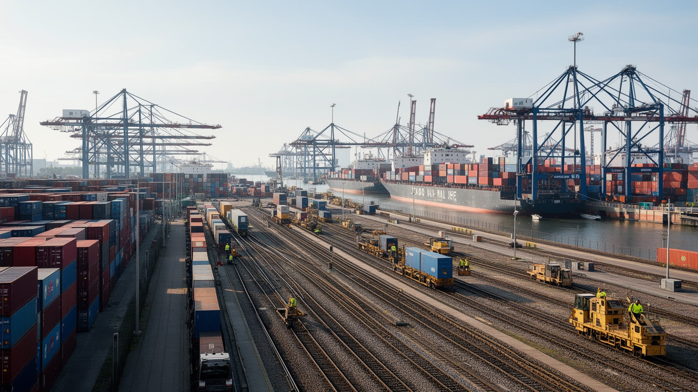
ハンブルク港は、ドイツ最大級の海港として都市の国際性を最も具体的に示す。コンテナ、機械、化学品、食品、コーヒー、部品、郵便、輸出入書類が、岸壁、倉庫、鉄道ヤード、トラック、内陸水運を通じて欧州各地へ流れる。港は単なる背景ではなく、税関、保険、船会社、貨物代理店、修理、燃料、清掃、警備、飲食、IT管理まで含む巨大な労働空間である。自動化されたターミナルが効率を高める一方、港湾労働者には技能転換、安全、夜勤、雇用の安定が問われる。アジアや北米との航路、バルト海や内陸部への接続は、ハンブルクを世界の供給網の一部にしているが、貿易摩擦、燃料価格、運河や海峡の混乱、制裁、景気後退の影響もすぐ届く。大型船に対応するための浚渫は競争力を保つ手段だが、エルベ川の生態系、泥の処理、漁業、周辺自治体との調整を伴う。港湾都市を読むには、観光船から見えるクレーンだけでなく、早朝の荷役、鉄道の積み替え、書類を処理する事務所、港で働く移民、騒音や大気を受ける地区を同じ地図に置く必要がある。ハンブルクの富は港の速度から生まれるが、その速度を支える労働と環境負荷を見なければ、都市の実力は半分しか見えない。港湾の競争力はコンテナ数だけでなく、鉄道比率、労働安全、排出削減、災害時の代替能力にも表れる。港を都市から切り離さず、住民の健康と地域経済の基盤として扱う視点が求められる。
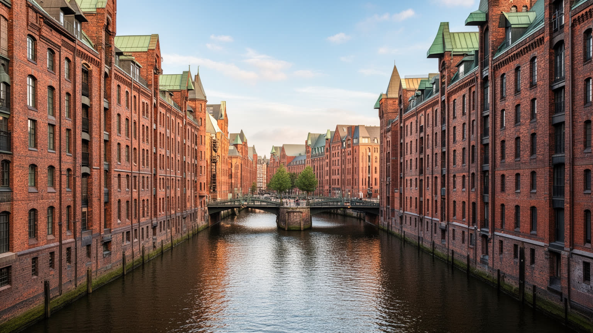
ハンブルクの倉庫街は、煉瓦の外観が美しい観光地である前に、世界の商品を保管し、分類し、保険をかけ、通関するための実務の空間だった。運河沿いに並ぶ倉庫は、コーヒー、茶、香辛料、絨毯、タバコなどを扱い、港と商人、労働者、金融、税関を結びつけた。現在は世界遺産として保存され、博物館、オフィス、観光施設、文化施設が入るが、外観を眺めるだけでは商業都市の複雑さは見えにくい。倉庫街の成立には関税制度、都市改造、労働、移転を迫られた住民、植民地貿易の利益が絡む。ハンブルクは自由ハンザ都市として自治と商業の誇りを持つが、その誇りは何を運び、誰の労働で富を得たのかという問いと切り離せない。煉瓦の橋を歩くと、商人の信用、保険、検品、帳簿、船会社、港湾労働が一つの都市景観になっていたことが分かる。保存は過去をきれいに固定するだけではなく、貿易の背後にある不平等や暴力、戦争の記憶、ユダヤ人迫害、企業責任を語る機会でもある。倉庫街は、ハンブルクが世界へ開いた窓であり、同時に世界から利益を得た都市の責任を映す鏡である。観光客が写真を撮る場所で、都市は商業の倫理をどう説明するかを問われている。新しい展示や教育プログラムが、商品の産地、船員、倉庫労働者、追い出された住民の経験まで扱えるなら、この遺産は美しい街並み以上の学びを持つ。
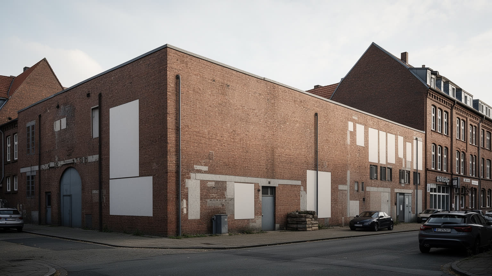
ハンブルクは港湾都市であると同時に、ドイツ有数のメディアと音楽の都市でもある。新聞、雑誌、放送、広告、出版社、制作会社、デザイン事務所が集まり、商業都市の情報感覚を形にしてきた。港と商社が世界の商品を運ぶなら、メディアはニュース、言葉、映像、世論を運ぶ。ザンクトパウリやレーパーバーンの劇場、クラブ、ライブハウスは、港町らしい夜の文化を育て、ビートルズが初期に演奏した記憶も観光と音楽史を結びつける。近年はエルプフィルハーモニーが新しい象徴となり、クラシック音楽、建築、観光、港湾再開発を一つの景観に重ねた。一方で、文化の華やかさは制作現場の不安定さも伴う。編集者、カメラマン、音響、舞台スタッフ、バーの従業員、警備、清掃、配達、フリーランスのクリエイターは、家賃や夜間労働、景気変動の影響を受けやすい。ハンブルクの文化を読むには、有名ホールだけでなく、小さなクラブ、移民の音楽、地区の祭り、地域新聞、劇場の裏方、夜の安全を支える人まで見る必要がある。メディアと音楽は都市の外向きの顔であると同時に、住民が自分たちの経験を語り、争い、共有する公共圏でもある。巨大な文化施設が水辺の象徴になるほど、家賃の高い地区で若い表現者が場所を保てるかも重要になる。文化都市の厚みは、華やかな舞台と安い練習場、商業メディアと地域の声が共存できるかに表れる。
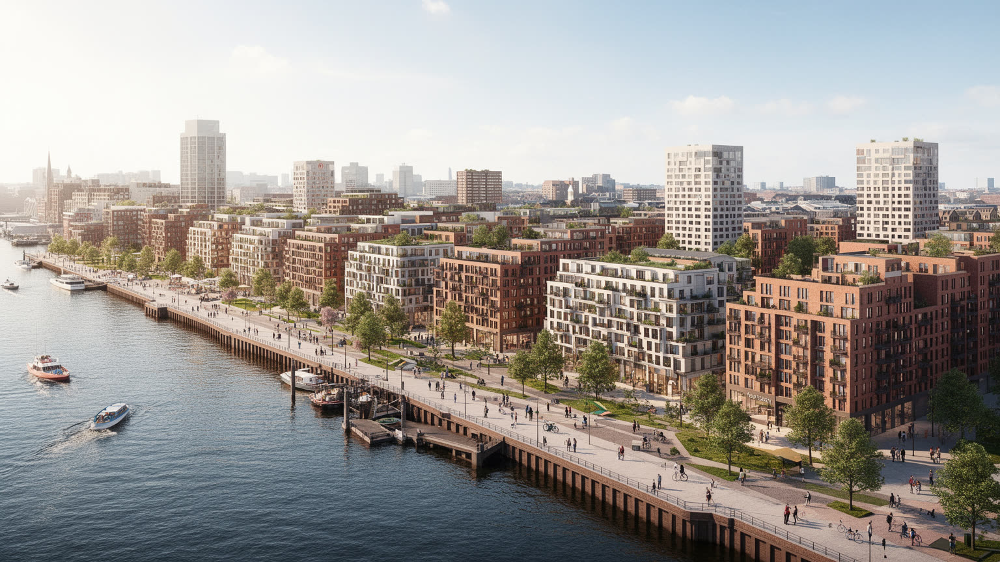
ハンブルクの住宅問題は、水辺の魅力と経済力が強い都市ほど避けられない課題である。ハーフェンシティは旧港湾用地を住宅、オフィス、文化施設、学校、歩行者空間へ変え、エルプフィルハーモニーとともに都市の新しい顔を作った。倉庫街に近い水辺で暮らすことは高い価値を持ち、都市のイメージを引き上げる。一方で、中心部や人気地区の家賃は上がり、学生、低所得世帯、移民、単身高齢者、若い家族は住まいの選択肢を狭められる。古い労働者地区がカフェやデザイン店の並ぶ場所へ変わると、建物は美しくなっても、長く住んだ住民や小商店が押し出されることがある。水辺の再開発は公共空間を増やし、環境性能の高い建物を導入する機会になるが、誰がそこに住めるのかを問わなければ都市の公平性は保てない。ハンブルクを住宅都市として読むには、高級マンションの広告だけでなく、社会住宅、家賃規制、協同組合住宅、郊外への通勤、学校や保育所の配置、洪水対策費の負担を見る必要がある。水辺は都市全体の財産であり、眺望を買える人だけのものではない。港湾都市の魅力を生活都市として持続させるには、再開発の利益を住民の日常へ戻す制度が欠かせない。新築の供給だけでは、既存住民の退去や小商店の消滅を止められない場合も多い。修繕助成、賃貸保護、公共交通、近隣の学校を合わせて考えることが、水辺の街を生活の場所として保つ条件になる。
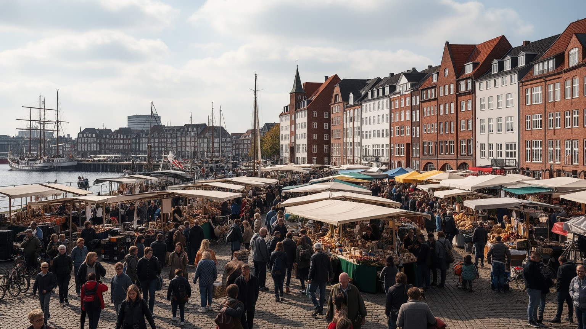
ハンブルクの国際性は、港を通る貨物だけでなく、住民の移動によって作られてきた。トルコ、中東、東欧、アフリカ、南アジア、ラテンアメリカ、旧ソ連圏、北海・バルト海沿岸の人びとが、港湾、造船、清掃、飲食、介護、建設、大学、IT、文化産業で都市を支える。プロテスタントの教会塔は都市景観の目印だが、カトリック教会、モスク、シナゴーグ、仏教やヒンドゥー教の場、移民コミュニティの小さな祈りも日常に組み込まれている。宗教施設は礼拝だけでなく、言語教育、家族相談、葬儀、食料支援、若者の居場所、故郷との連絡を担う。多文化性は港町の開放性として語られやすいが、在留資格、住宅差別、学校での進路、職業資格の承認、警察への信頼、反ユダヤ主義や反イスラム感情への対応は現実の課題である。ハンブルクを移民都市として読むには、国際的なビジネス街の英語だけでなく、港湾労働者の家族、移民商店、礼拝へ向かう人、複数言語で育つ子どもを同じ地図に置く必要がある。移動の歴史は都市を豊かにするが、その豊かさは制度と近隣関係が支えて初めて日常の安心になる。港町の寛容は標語ではなく、学校、住宅、雇用、祈りの場で試される。二世、三世の住民が政治、文化、起業、教育で発言を増やすほど、都市の自己像も単純な商業都市から多声的な市民都市へ変わっていく。
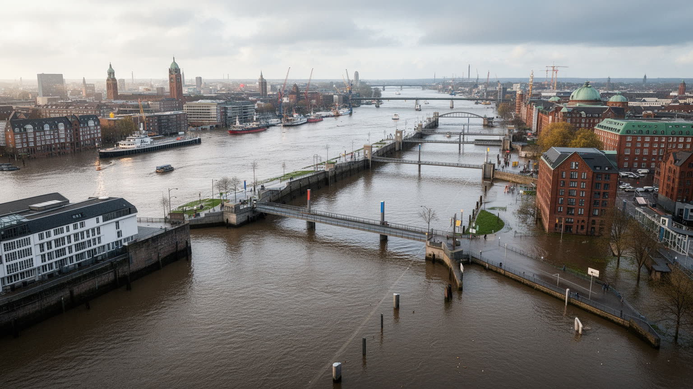
ハンブルクの気候は海洋性で、曇り、雨、風、冷涼な冬、穏やかな夏が日常の感覚を作る。強い日差しの都市ではないが、気候変動はここでも現実的な課題である。エルベ川の水位、北海からの高潮、集中豪雨、内水氾濫、港湾施設の浸水、地下空間の排水、低地の住宅地、交通網の寸断が、都市の安全を左右する。ハンブルクは一九六二年の大洪水の記憶を持ち、堤防、警報、避難、都市計画を重視してきた。だが水辺再開発が進み、港湾機能と住宅、オフィス、観光施設が近づくほど、リスクを細かく設計へ織り込む必要が増す。ハーフェンシティの高い地盤や建物の防水設計は、魅力的な水辺を維持しながら危険を管理する試みでもある。気候適応は技術だけではない。高齢者や低所得世帯が避難情報を受け取れるか、地下鉄やバスが止まった時に通勤と医療がどうなるか、港湾労働者が荒天時に安全に働けるかも問われる。雨の多い都市では、街路樹、透水性の地面、緑地、運河の水質、屋根の断熱が生活の質に直結する。ハンブルクの水辺の美しさは、堤防と排水、記憶と訓練、公共投資によって支えられている。気候の時代には、その見えにくい備えこそ都市の価値になる。観光客の多い地区でも、住民の避難路、港の操業継続、学校や病院の安全を同時に確保する必要がある。水害対策は土木だけでなく、情報、福祉、近隣の信頼を含む都市の総合力である。
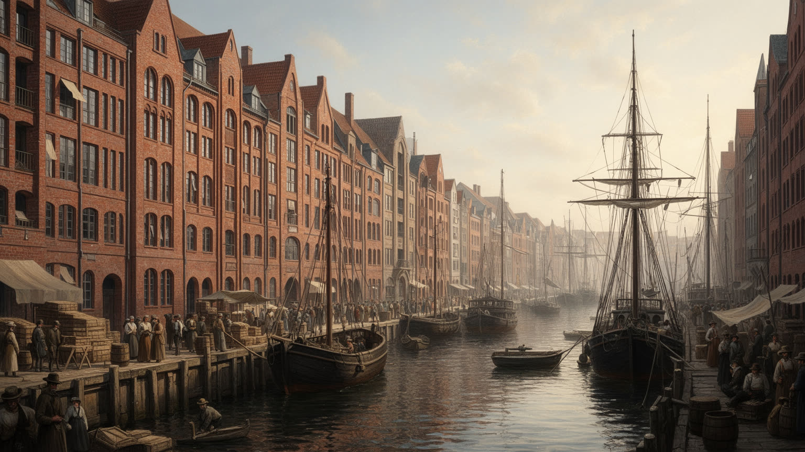
ハンブルクの交易史は、港湾の技術だけでなく、商人の信用、帳簿、保険、契約、自治の制度によって作られてきた。中世の北海・バルト海交易から近代の海外貿易、戦後のコンテナ化まで、都市は物を運ぶだけでなく、価格、危険、情報、時間を管理する能力を磨いた。市庁舎や商工会議所の重厚さは、商業が都市の権威を作ってきたことを示す。商人文化は慎重さ、実務性、国際感覚を育て、銀行、海運、商社、メディア、物流企業へ受け継がれた。一方で、交易の歴史には植民地商品、奴隷制と結びついた経済、戦時体制、ナチズム期の企業活動、移民労働の不平等も含まれる。豊かな商業都市を理解するには、成功した商人の物語だけでなく、倉庫で働いた人、船員、港の周辺で暮らした貧しい住民、排除されたユダヤ人の歴史を見なければならない。ハンブルクの交易は世界を近づけたが、同時に遠い土地の労働や環境を都市の富へ変えた。現代の持続可能な貿易や企業責任の議論は、こうした歴史と無関係ではない。商業の誇りを持つ都市だからこそ、利益の流れと責任の所在を丁寧に語る必要がある。交易史は過去の栄光ではなく、現在の港湾政策と企業倫理を測る基準でもある。今日のサプライチェーンでも、安い商品、迅速な配送、港の競争力は遠い労働条件や環境負荷とつながっている。歴史を学ぶことは、便利さの代価を都市がどう引き受けるかを考えることでもある。
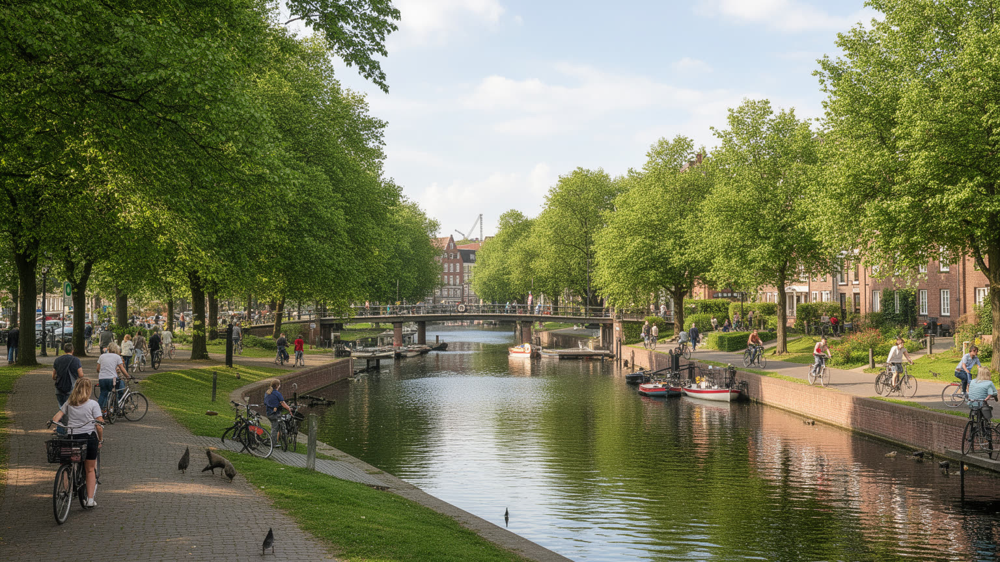
ハンブルクは港と倉庫の都市であると同時に、湖、運河、公園、街路樹、水辺の散歩道が生活の余白を作る都市でもある。アルスター湖は中心部のすぐ近くに開け、通勤前の散歩、昼休み、ヨット、ジョギング、週末の家族の時間を受け止める。市内の運河や小川は地区を細かく結び、橋の多い景観を生む一方、雨水管理と水質保全の課題も抱える。緑地は見た目の美しさだけでなく、暑さを和らげ、雨を受け止め、生物の通り道を残し、住民の心身を支える社会インフラである。水辺の公園が近い地区は生活の質が高いが、家賃も上がりやすい。どの住民が木陰や湖畔を日常的に使えるのかは、都市の公平性を測る指標になる。港湾、道路、住宅開発が土地を求めるなかで、緑と水路をどう守るかは簡単ではない。ハンブルクを環境都市として読むには、観光写真の湖だけでなく、運河の水質、雨水の行き場、自転車道の安全、学校や集合住宅の周りの木陰、低所得地区の公園整備を見る必要がある。緑と水は港町の硬い実務を和らげるだけでなく、気候変動の時代に都市を冷まし、雨を受け止める防災装置でもある。公共空間としての水辺を広く保てるかが、生活都市としてのハンブルクを支える。港の近くで働く人、中心部のオフィスワーカー、郊外の家族が同じ水辺を使えるなら、緑地は階層を越えた共通の都市資源になる。維持管理とアクセスの公平さが、その価値を左右する。
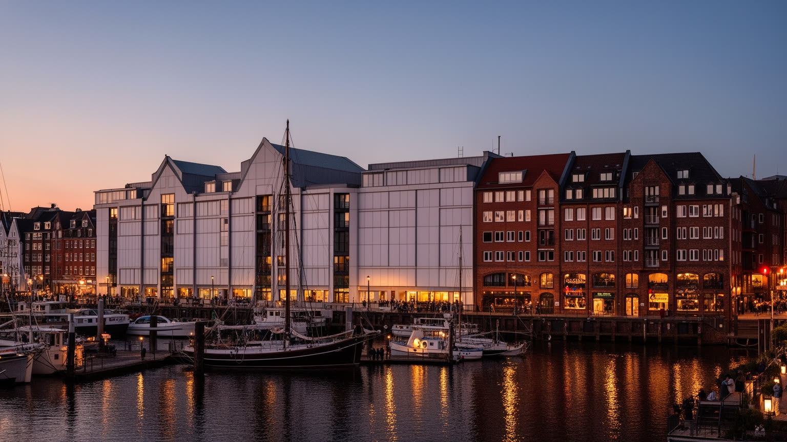
ハンブルク観光の中心には、倉庫街とチリハウスを含む歴史的な商業景観、港湾ツアー、アルスター湖、聖ミヒャエル教会、魚市場、レーパーバーン、エルプフィルハーモニーがある。煉瓦の倉庫、運河、橋、クレーン、教会塔は、商業都市の記憶を分かりやすく見せる。日中の港は家族連れや写真を撮る旅行者を集め、夜にはザンクトパウリの劇場、クラブ、バー、ライブハウス、性産業、警備、清掃、深夜交通が別の都市の時間を作る。レーパーバーンは音楽史や歓楽街の象徴として知られるが、そこには依存症支援、住民の騒音、労働条件、治安、ジェンダーをめぐる課題もある。観光はホテル、飲食、交通、文化施設に収入をもたらすが、混雑、短期滞在、価格上昇、地域のイメージ固定化も生む。ハンブルクを観光都市として読むには、港を眺める楽しさと、港で働く人の時間、倉庫街の保存と新しいオフィス化、夜の娯楽と近隣の生活を同時に見る必要がある。遺産は過去を飾るためだけではなく、商業と労働、富と責任を問い直す入口である。昼の水辺と夜の街を分けずに見ると、都市の魅力は消費だけでなく、安全、交通、福祉、文化の支えによって成り立つことが分かる。水辺の美しさを深く味わうほど、その背後の制度と労働も見えてくる。早朝の魚市場から深夜の音楽街まで一日を追うと、観光は途切れない都市労働の上にあると分かる。楽しさを長く保つには、働く人と住民の生活時間を守る配慮が欠かせない。
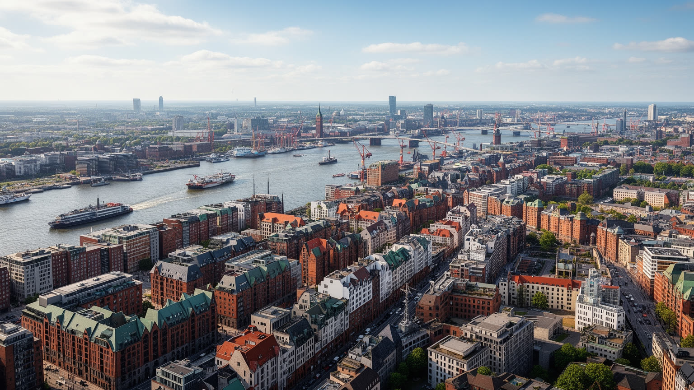
ハンブルクを一言で港町と呼ぶことはできるが、その言葉だけでは都市の厚みは見えない。エルベ川は世界貿易を運び、アルスター湖は中心部に余白を作り、倉庫街は商業の記憶を保存し、ハーフェンシティは再開発と住宅問題を同時に示す。港湾物流、航空機産業、メディア、音楽、観光は都市の経済を支えるが、それらの背後には荷役、清掃、介護、飲食、配送、夜勤、フリーランスの仕事がある。自由ハンザ都市の誇りは、自治と商業の実務を大切にしてきた歴史に根ざす一方、植民地貿易や戦争の記憶をどう語るかという責任も伴う。多宗教の移民生活は港町の開放性を日常に変えるが、住宅、学校、資格、差別への対応がなければ安心にはならない。水辺の美しさは観光を引き寄せるが、高潮、洪水、家賃上昇、公共空間の分配をめぐる課題も生む。ハンブルクを読むことは、海運の速度と住民の生活時間、煉瓦の遺産と現場の労働、湖畔の余暇と港湾の緊張を一つの都市として重ねることである。北ドイツの冷たい風の下で、ハンブルクは実務の堅さと文化の熱、商業の自信と社会的責任を同時に試されている。その均衡を保てるかが、世界へ開く内陸港の未来を決める。港を成長させる政策、住宅を守る制度、移民を支える学校、気候に備える堤防、夜の文化を守る小さな店は別々の話ではない。すべてが水辺の都市を生活の場所として続けるための同じ課題である。